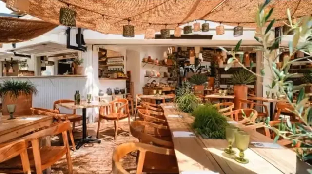
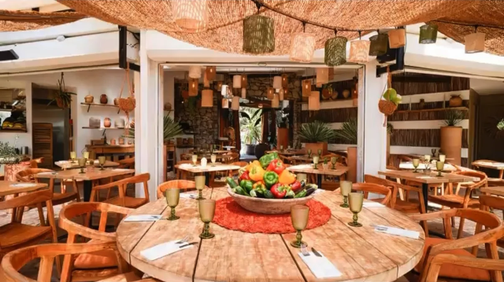
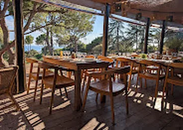
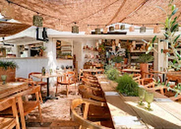
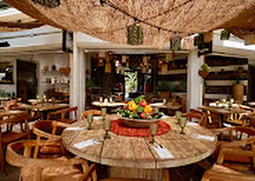
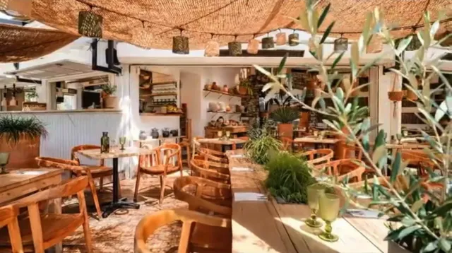
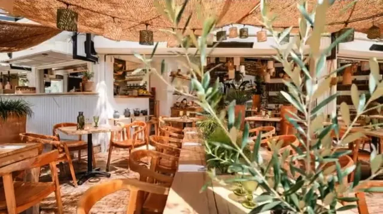

09h30
Le matin, café face au large
Les premiers rayons passent à travers la canisse. Café, viennoiseries, jus pressés — et la mer encore lisse.

Sous les pins, au-dessus des flots. Une cuisine de la mer et de la braise, des cocktails à l’heure dorée, et une terrasse où le temps ralentit.



Au bout de l’allée Pierre Barthas, là où la forêt des Pierres Blanches plonge dans la mer, La Mesa a pris ses quartiers sous une canisse tressée. Du bois clair, des lanternes en rotin, des verres verts qui accrochent la lumière : ici on mange les pieds presque dans le sable, à l’ombre des pins.
La Mesa, c’est « la table » en espagnol. Une grande table à partager, une cuisine qui va chercher son poisson à la criée du matin et le passe à la braise le soir, et une équipe qui préfère les assiettes généreuses aux discours.
Huîtres de l’étang de Thau, poulpe à la braise, loup en croûte de sel. La carte change au rythme des arrivages ; voici quelques fidèles.
Faites glisser pour tourner la table

Les premiers rayons passent à travers la canisse. Café, viennoiseries, jus pressés — et la mer encore lisse.

Poisson de la criée, assiettes à partager, rosé bien frais. Le déjeuner de la semaine dès 29 €, du mardi au vendredi.

Le soleil tombe dans la mer, les lanternes s’allument. Cocktails, braise et longues tablées jusqu’à minuit.
Le bar fait face à l’ouest. Chaque soir d’été, le soleil se couche dans la mer juste derrière votre verre. Nos cocktails sont pensés pour ce moment-là : herbes du parc, agrumes, sel et fumée.
L’abus d’alcool est dangereux pour la santé · à consommer avec modération
65 allée Pierre Barthas
34200 Sète — Corniche
04 67 53 33 40 · Réservation obligatoire
Horaires susceptibles de varier selon la saison et la météo. Dernière commande 30 minutes avant la fermeture.